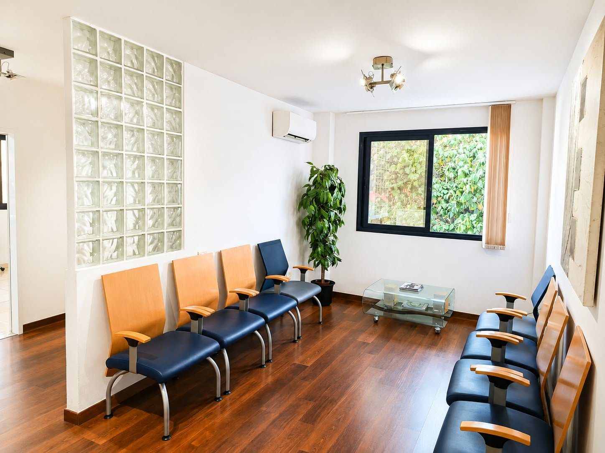

Estamos en el centro de Santa Cruz de Tenerife.
Llámanos, escríbenos por email o utiliza el formulario para solicitar cita, consultar disponibilidad o hacernos una consulta.
Hablemos.
Así encontrarás la clínica.
La fachada y la sala de espera para que puedas reconocer el espacio cuando llegues.

Escríbenos.
Tu solicitud llegará por email al equipo de Clínica Scherba para que podamos responderte o gestionar tu cita.
Ayúdanos a preparar tu visita.
Al pedir cita, cuéntanos si tienes dolor, inflamación, un traumatismo reciente o alguna situación que consideres urgente. También es útil indicar medicación habitual y antecedentes relevantes.
¿Atendéis urgencias?
Contacta por teléfono y explica qué ocurre. El equipo te indicará la disponibilidad y el siguiente paso.
¿Debo llevar pruebas anteriores?
Sí, si dispones de radiografías, informes o una lista de medicación reciente, pueden ser útiles para contextualizar la valoración.
¿Cómo llego?
La clínica está en C. de Fernández Navarro, 35, cerca del centro de Santa Cruz de Tenerife. Usa el enlace de Google Maps para planificar la ruta.